ISWC 2026, 29 October 2026
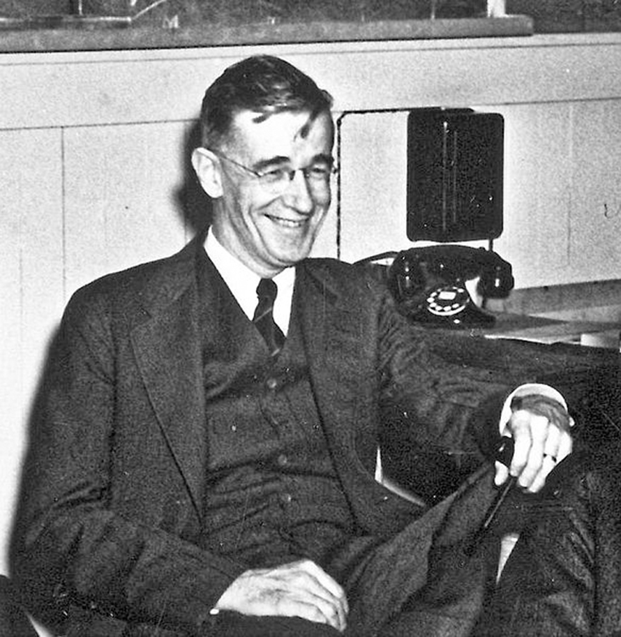
Vannevar Bush, Manhattan Project, NSF Photo: Office for Emergency Management, 1940–44 (Library of Congress, public domain)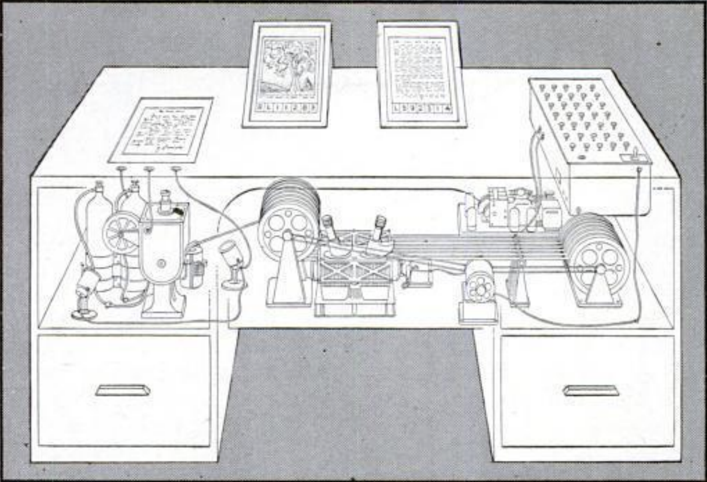
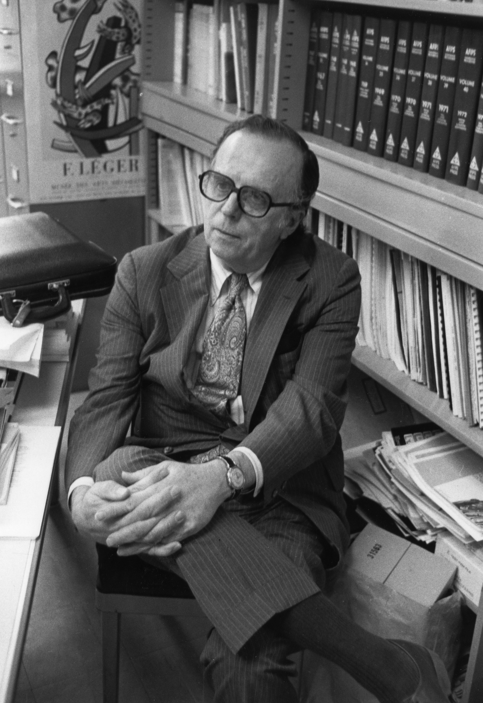
Joseph Carl Robnett Licklider, ARPA Photo: MIT Museum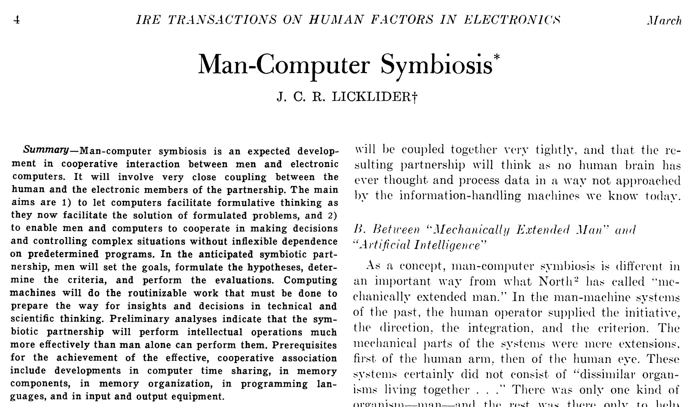
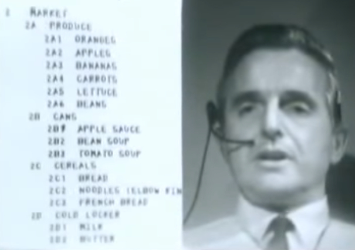
Douglas Engelbart, Augmentation Research Center Still from the 1968 SRI demo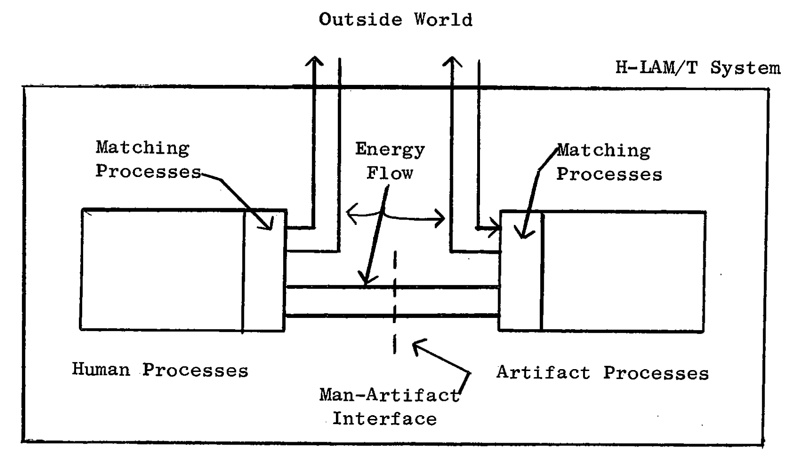
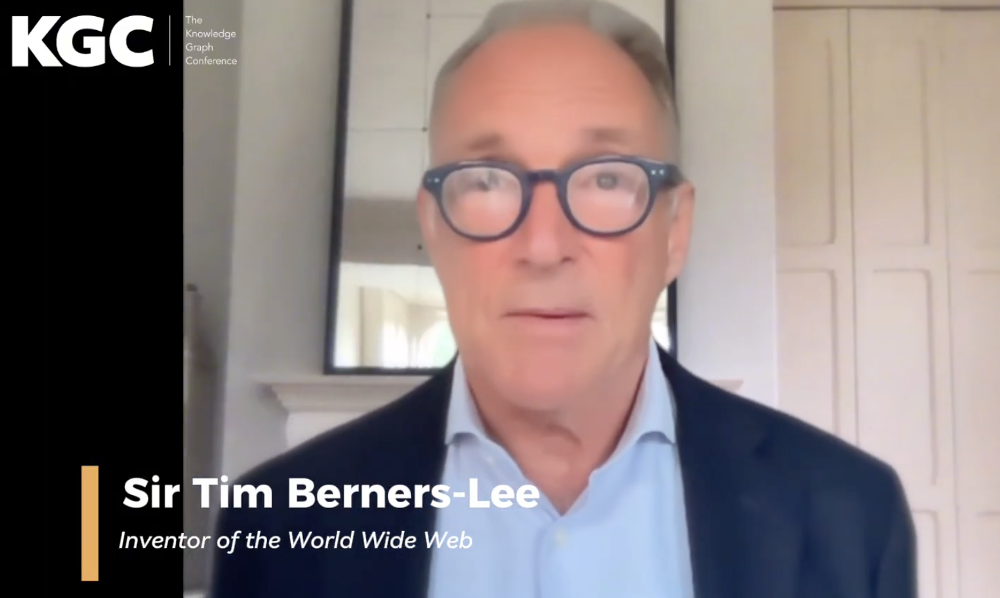
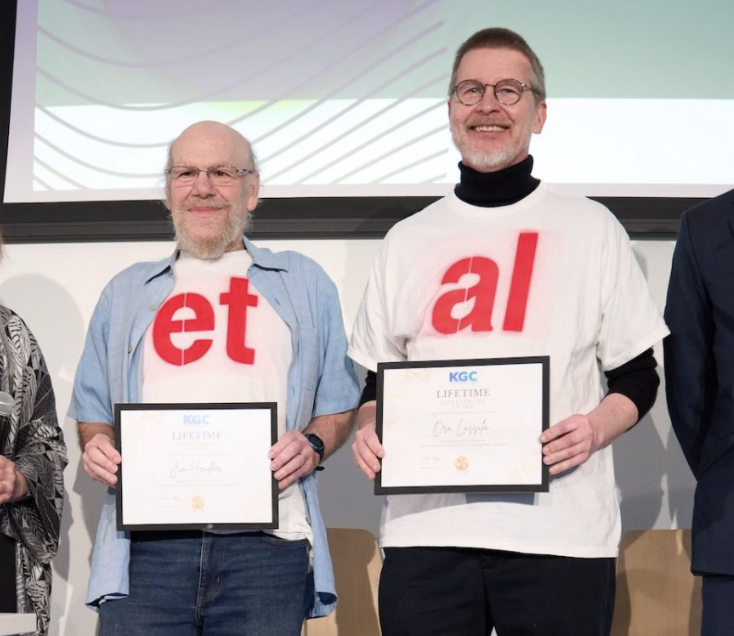
Tim Berners-Lee, Jim Hendler, Ora Lassila Photos: Knowledge Graph Conference (KGC), 2025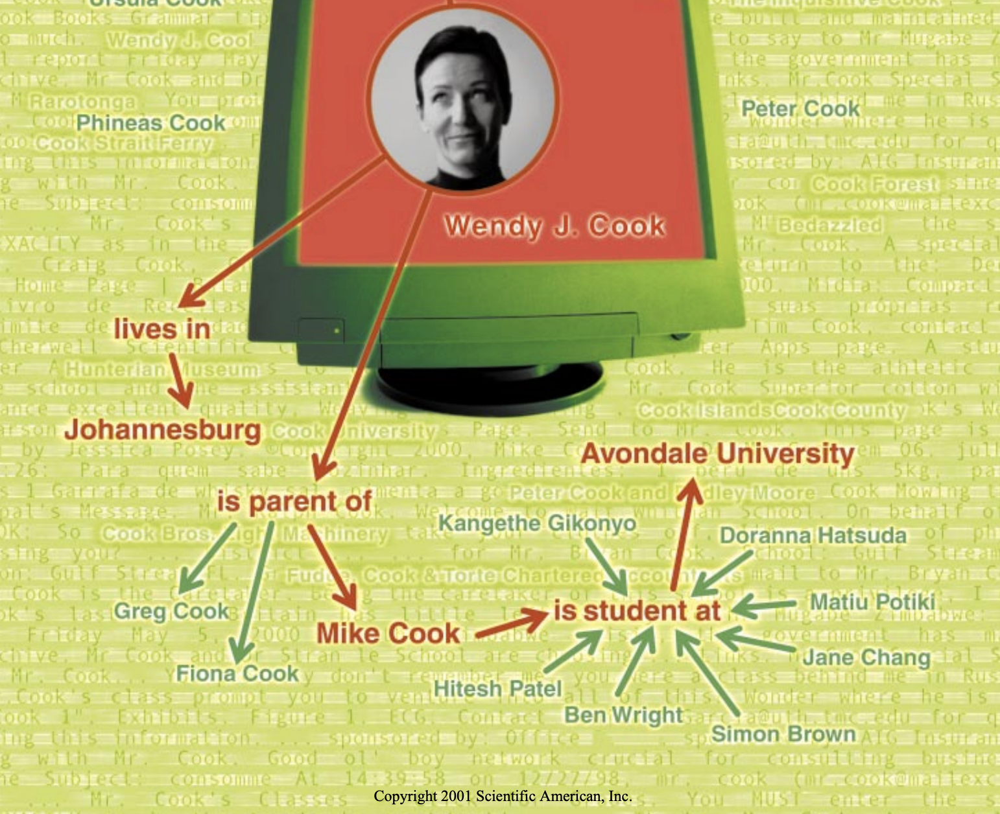
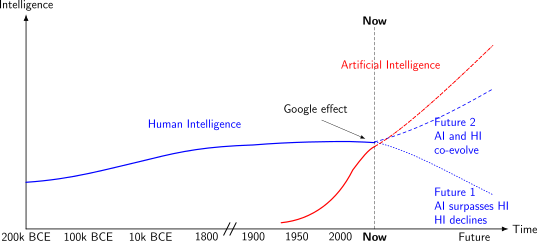
Google effect: we offload thinking to search engines and AI, causing our memory and skills to degrade (Sparrow et al., 2011).
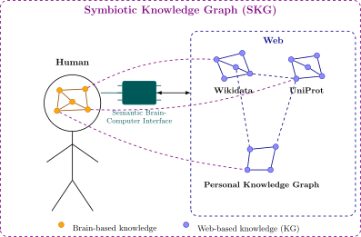
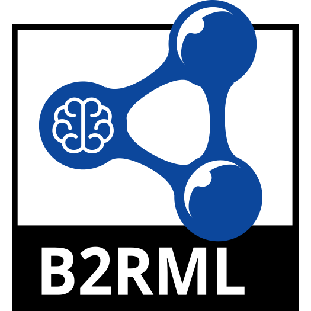